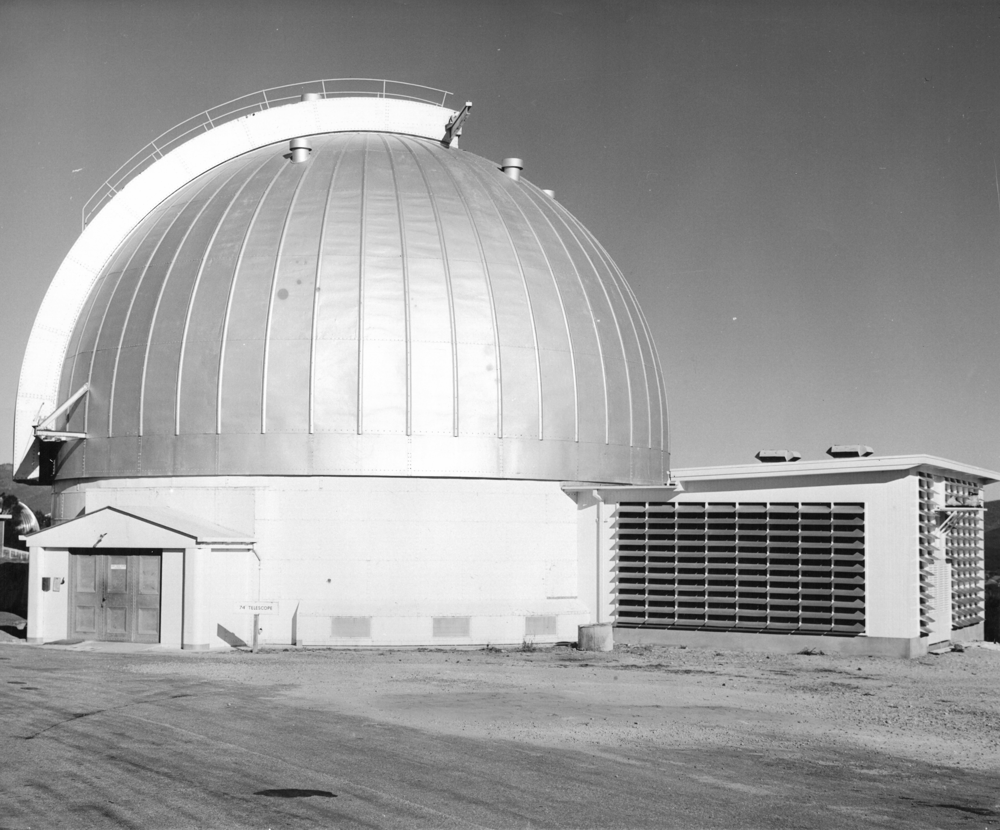
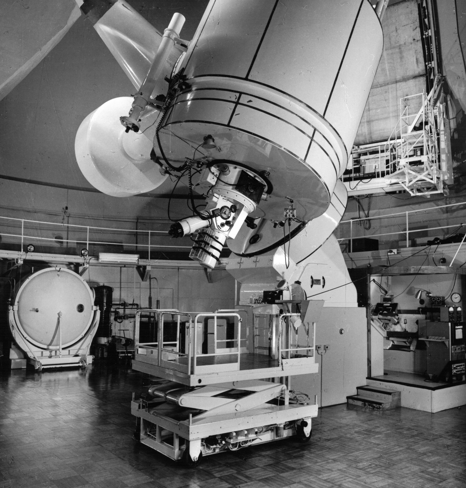
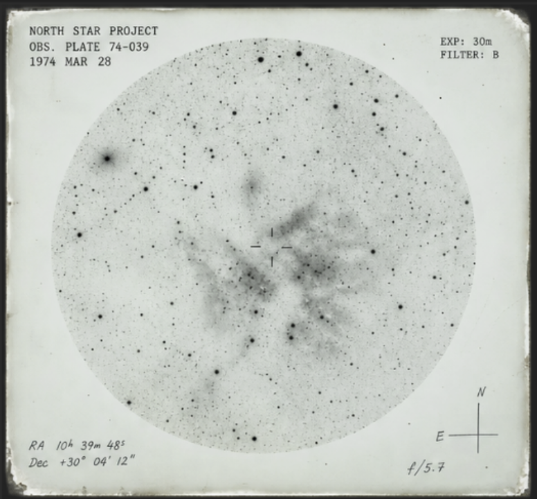
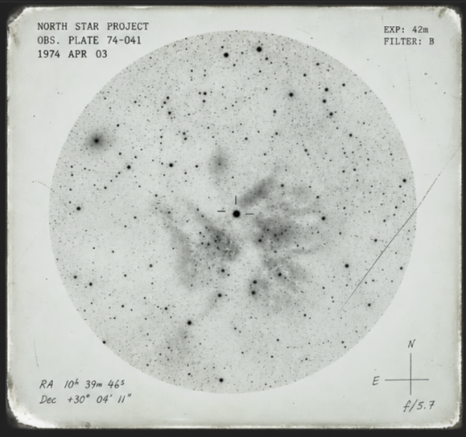
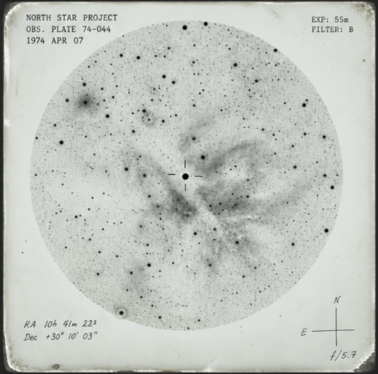
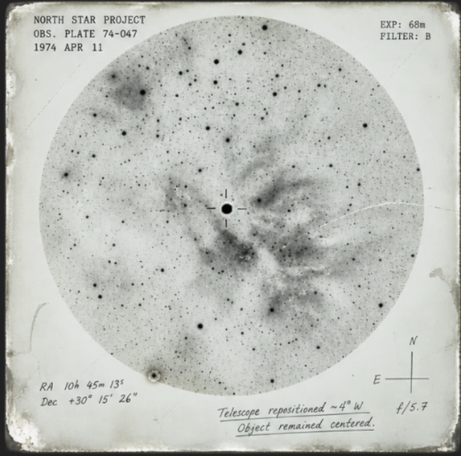

THE NORTH STAR PROJECT
Photographic & Image Archive
Original research materials: 1972–1977
Digitization initiative: 2003–2004
Photographic materials were reconstructed from scanned prints, negatives, photographic plates, and damaged digital media.
Several images referenced by the original catalog remain unavailable.
Recovery integrity: 87%
Facility Documentation
Surviving photographs documenting the North Star Project observation facility and primary instrumentation.

Primary Observatory — Exterior
Date: c. 1972
Source: Facility Documentation
Digitized: October 2003

Primary Observation Instrument — Interior
Date: Unknown
Source: Facility Documentation
Digitized: November 2003

Researcher Using Primary Observation Instrument
Date: c. 1973–1974
Photographer: Unknown
Identity unconfirmed.
1974 Observation Plates
The following photographic plates correspond to surviving observation records from March and April 1974.
Catalog descriptions have been preserved where available.

March 28, 1974
Initial plate containing suspected photographic artifact approximately 2.3° from expected reference position.
View corresponding observation record

April 3, 1974
Secondary exposure following inspection of telescope optics and photographic equipment.
View corresponding observation record

April 7, 1974
Unidentified light source recorded during repeated survey exposure.
No corresponding object located in available reference charts.
View corresponding observation record

April 11, 1974
Final surviving plate from observation sequence 74-039 through 74-047.
Telescope alignment changed during exposure verification.
Object remained centered.
View corresponding observation record
April 12, 1974
Catalog entry recovered.
Original photographic plate: NOT LOCATED
Digital scan: NOT RECOVERED
Catalog Note
Observation plate NSP-74-048 appears in the original photographic index and is listed as having been successfully exposed on April 12, 1974.
No corresponding physical plate was located among the surviving materials.
A digital record associated with the catalog number was created during the 2004 digitization initiative.
The associated image file could not be recovered.